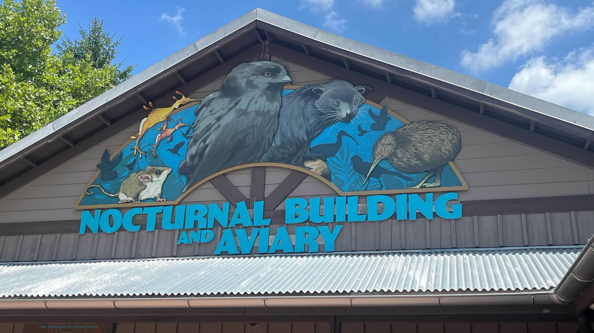

Nocturnal & Aviary Building
Columbus Zoo & Aquarium · Photo Tour #29
I started with the after-dark animals in the Nocturnal Building at Columbus Zoo, meeting a kiwi, a wombat, a tree kangaroo and a slow loris. Then I crossed to the aviary for the birds, from a Nicobar pigeon to an eastern rosella.

I headed into the Nocturnal Building and Aviary at Columbus Zoo, and I took twenty photos, half in the dark and half among the birds.
Inside the Nocturnal Building, I saw a weedy sea dragon, a North Island brown kiwi, a southern hairy-nosed wombat, a brush-tailed bettong, a pygmy slow loris, a Matschie's tree kangaroo, a feather-tailed glider, an Indian crested porcupine, and a Bali myna.
Then in the aviary, I saw a metallic starling, a pied imperial pigeon, a Nicobar pigeon, a Luzon bleeding-heart dove, a chestnut teal, a masked lapwing, an eastern rosella, a southern masked weaver, a scarlet-faced liocichla, and a red-billed leiothrix.
I posted this on Facebook — open the original post → · same tour on Instagram